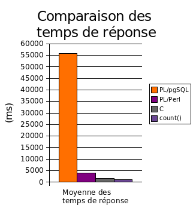
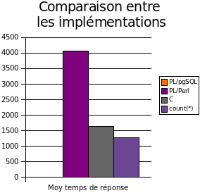

|
Ouverture de session
Navigation
Contactez-nous
Administration du site :
"equipe chez postgresqlfr point org"
Contact presse :
"fr chez postgresql point org"
Contact association :
"bureau chez postgresqlfr point org"
Questions PostgreSQL :
IRC :
serveur irc.freenode.net
canal #postgresqlfr
Recherche
Sujets du forum
Sujets actifs
Nouveaux sujets:
Syndication
Sondage
Index inversé, en C
| Index inversé, en C
Par Guillaume Lelarge le 05/09/2007 - 18:33
Depuis la version 8i, Oracle implémente les index inversés. Voici une proposition d’implémentation équivalente pour PostgreSQL. Les index inversés permettent d’accélérer les recherches sur les motifs tels que « colonne LIKE '%chaîne' ». Dans un tel cas, PostgreSQL effectue un parcours séquentiel (ou « sequential scan ») de la table interrogée. Toutefois, il est possible d’émuler un index inverse au moyen d’une fonction de renversement de chaîne couplée à un index sur fonction.
L'article précédent proposait l'implémentation d'un prototype en langage procédural PL/pgSQL, qui fait office ici de prototype. Cette implémentation a pour principal défaut d'être lente, pénalisant ainsi gravement les performances en écriture (INSERT et UPDATE). Ainsi, à chaque mise à jour, il est nécessaire de faire appel à la fonction reverse pour mettre à jour l'index fonctionnel ; cela s'observe notamment à la création de l'index. En revanche, il est possible de tirer partie des capacités de traitement des caractères multi-octets, que l'on rencontre notamment dans le cas d'une base de données encodée en UTF-8.
Ainsi, l'implémentation en langage C se doit d'être à la fois plus rapide et surtout se doit de supporter les jeux de caractères multi-octets. C'est à partir de ce minuscule cahier des charges que nous allons construire notre fonction reverse.
Pourquoi écrire une procédure stockée en C
Pourquoi s'embêter à prendre le temps d'écrire une procédure stockée en langage C alors qu'il est possible de faire la même chose en langage PL/pgSQL ?
Il y a plusieurs réponses à cette question :
- Une fonction C permet de protéger le code. En effet, rien n'interdit à un utilisateur possédant les droits nécessaires de modifier la procédure stockée que l'on a écrite et validé par une autre procédure de son crue, rendant le système inopérant.
- Si le besoin de créer son propre type de données se fait sentir, le passage par la case
fonction C
est obligatoire. - La satisfaction de connaître un peu mieux le fonctionnement interne de PostgreSQL, mais c'est surtout une satisfaction de geek :)
- La problématique de la vitesse est toutefois le facteur déterminant de la réécriture d'une fonction d'un langage procédural interprété en langage compilé.
Le gain significatif de vitesse ne sera pas évident pour les requêtes de sélection. En revanche, les écritures (surtout INSERT et UPDATE) peuvent être fortement pénalisées par le coût de la mise à jour d'un index fonctionnel. Bien que cela ne soit pas évident pour une opération unitaire, il sera parfaitement visible dans le cas d'une opération d'écriture en masse (chargement massif de données), ou tout simplement pour la création de l'index fonctionnel. Dans un tel cas, l'option d'une réécriture en langage C est à envisager très sérieusement.
Implémentation et discussion technique
Les possibilités d'extension de PostgreSQL s’appuient sur les mécanismes de chargement dynamique de bibliothèque du système d’exploitation. L’interface de programmation est relativement simple, à condition d’en connaître certaines clés.
Structure du projet
Le projet est articulé autour de différents fichiers, qui seront tous placés dans un répertoire dédié :
- un fichier
Makefilesimplifié, utilisant PGXS, l'infrastructure de construction d'extension PostgreSQL ; - un modèle de script SQL d'installation
reverse.sql.in; - un fichier
uninstall_reverse.sql; - le fichier source en langage C,
reverse.c.
Fichiers annexes
Avant toute chose, il faut disposer d’un fichier « Makefile » de construction du module externe :
MODULES = reverse
#PG_CPPFLAGS = -ggdb
DATA_built = reverse.sql
DATA = uninstall_reverse.sql
PGXS := $(shell pg_config --pgxs)
include $(PGXS)
Le Makefile utilise ici l’outil PGXS qui propose un fichier Makefile prédéfini, à l’instar des fichiers Makefile fournis par Oracle.
Le fichier « reverse.sql.in » qui sert de modèle à la création du fichier d'installation de l'extension « reverse.sql ». Ce dernier fichier sera généré à partir du modèle en remplaçant « MODULE_PATHNAME » par le chemin complet du fichier objet généré.
-- Déclaration de la fonction reverse en tant que module C
SET search_path = public;
CREATE OR REPLACE FUNCTION reverse(varchar) RETURNS varchar
AS 'MODULE_PATHNAME', 'reverse'
LANGUAGE 'C' IMMUTABLE STRICT;
Le script « reverse.sql » sera exécuté par un utilisateur PostgreSQL ayant le rôle d’administrateur, les fonctions C étant considérées comme non-sûres et donc de la responsabilité de l’administrateur.
Un script de désinstallation « uninstall_reverse.sql » est également prévu, ça fait toujours plaisir :
SET search_path = public;
DROP FUNCTION reverse(varchar);
Un peu de technique
La lecture de la page « Fonctions en langage C » permet d’obtenir les informations nécessaires au développement d’une fonction C, voir la documentation « Fonctions en langage C ». Cependant la lecture des fichiers d’en-têtes permet d’apporter un éclairage supplémentaire sur certaines structures de données.
Traitement des chaînes de caractères avec PostgreSQL
Sous PostgreSQL, les chaînes de caractères ne sont pas délimitées par un caractère nul « \0 » terminal, mais, à l’instar du langage Pascal, en stockant dans une structure d’abord sa longueur puis son contenu. Une telle chaîne est décrite dans une structure de type « varlena ». Ce type de données offre en fait un moyen uniforme de stocker tout type de données à longueur variable, comme les chaînes de caractères, les tableaux ou encore les types utilisateurs.
Voici sa définition, obtenu dans le fichier d'en-tête c.h, à la ligne 409 :
struct varlena
{
int32 vl_len_; /* Do not touch this field directly! */
char vl_dat[1];
};
Ainsi, l'entier vl_len contient la longueur, en octets, de la chaîne d'octets vl_dat.
Quelques macros permettent de manipuler facilement cette structure.
VARDATA(varlena)obtient un pointeur sur la donnée ;VARSIZE(varlena)obtient la taille en octets de la structure varlena (vl_len + vl_dat) ;- la constante
VARHDRSZreprésente la taille en octet devl_len; - Enfin,
VARATT_SIZEP, remplacée parSET_VARSIZEà partir de la 8.3, permet de définir la longueur en octets de la donnée.
Ainsi, pour obtenir la longueur en octets de la données, on utilisera (VARSIZE - VARHDRSZ).
Support des jeux de caractères multi-octets
L'implémentation proposée supporte les jeux de caractères multi-octets, comme l'UTF8 (ou Unicode) et les jeux de caractères asiatiques, qui représente certains caractères sous la forme d'une séquence de deux octets ou plus (voir référence). PostgreSQL met à disposition des fonctions utiles pour manipuler les chaînes de caractères, peu importe l'encodage, notamment pg_verifymbstr qui valide une chaîne de caractère selon l'encodage de la base de données, ou encore pg_mblen qui donne la longueur en octets d'un caractère. Pour le prototype des fonctions citées et d'autres fonctions, se référer au fichier d'en-tête « mb/pg_wchar.h ».
Les conventions d'appel
Il existe deux conventions d'appel de fonctions externes :
- La convention d'appel version 0, représentant l'ancien style, simple à utiliser ;
- La convention d'appel version 1, qui est la norme dorénavant et qui ne présente pas de difficultés particulières.
La convention d'appel version 1 sera utilisée dans le but de donner d'entrée de jeu de bonnes habitudes. La complexité de cette convention est masquée par une batterie de macros qui rendent son utilisation tout aussi simple, voire encore plus simple que la version 0, notamment pour le passage d'arguments.
Implémentation en langage C
Le source C est structuré en quatre parties :
- L’inclusion des fichiers d’en-têtes nécessaires ;
- La définition d’un « magic » signant un module externe PostgreSQL ;
- La définition d’un « magic » déclarant la fonction reverse à PostgreSQL ;
- Le corps de fonction reverse, cette fois en langage C.
Voici ci-après, le code source en langage C de la fonction reverse.
/*
* reverse procedural function
*
* Thomas Reiss, 12/07/2007 – 24/07/2007 - 02/08/2007
* Alain Delorme, 24/07/2007
* Merci à depesz pour ses tests sur la version 8.3devel
*
*/
#include "pg_config.h"
#include "postgres.h"
#include "fmgr.h"
#include "mb/pg_wchar.h"
#include "utils/elog.h"
#ifdef PG_MODULE_MAGIC
PG_MODULE_MAGIC;
#endif
Datum
reverse(PG_FUNCTION_ARGS);
// SET_VARSIZE correspond à la nouvelle API, nous définissons cette
// macro pour les versions ne la possédant pas.
#ifndef SET_VARSIZE
#define SET_VARSIZE(n,s) VARATT_SIZEP(n) = s;
#endif
/* fonction reverse */
PG_FUNCTION_INFO_V1(reverse);
Datum
reverse(PG_FUNCTION_ARGS)
{
int len, pos = 0;
VarChar *str_out, *str_in;
/* Obtient l'adresse de l'argument */
str_in = PG_GETARG_VARCHAR_P_COPY(0);
/* Calcul de la taille en octet de la chaîne */
len = (int) (VARSIZE(str_in) - VARHDRSZ);
/* Créer une chaîne vide de taille identique */
str_out = (VarChar *)palloc(VARSIZE(str_in));
/* La structure résultante aura une longueur identique */
SET_VARSIZE(str_out, VARSIZE(str_in));
/* Vérifie que l'encodage de la chaîne en argument
* concorde avec l'encodage de la BDD */
pg_verifymbstr(VARDATA(str_in), len, false);
/* Copie à l'envers de la chaîne */
while (pos < len)
{
int charlen = pg_mblen(VARDATA(str_in) + pos);
int i = charlen;
// Copie un caractère.
// !! Un caractère != un octet
while (i--)
*(VARDATA(str_out) + len - charlen + i - pos) = *(VARDATA(str_in) + i + pos);
pos = pos + charlen; // incrémente le compteur
}
PG_FREE_IF_COPY(str_in, 0);
/* Retourne la copie */
PG_RETURN_VARCHAR_P(str_out);
}
Construction
La construction de l'extension PostgreSQL est réalisée en invoquant make
tom@clementina:~/src/reverse$ make
cc -g -Wall -O2 -fPIC -Wall -Wmissing-prototypes -Wpointer-arith -Winline -Wdeclaration-after-statement -Wendif-labels -fno-strict-aliasing -g -fpic -I. -I/usr/include/postgresql/8.2/server -I/usr/include/postgresql/internal -D_GNU_SOURCE -I/usr/include/tcl8.4 -c -o reverse.o reverse.c
cc -shared -o reverse.so reverse.o
rm reverse.o
Si tout s'est bien passé, l'installation sera finalisée en exécutant la commande make install, éventuellement précédé de sudo en fonction de sa distribution et de son installation de PostgreSQL.
tom@clementina:~/src/reverse$ sudo make install
Password: xxxx
/bin/sh /usr/lib/postgresql/8.2/lib/pgxs/src/makefiles/../../config/install-sh -c -m 644 ./reverse.sql '/usr/share/postgresql/8.2/contrib'
/bin/sh /usr/lib/postgresql/8.2/lib/pgxs/src/makefiles/../../config/install-sh -c -m 755 reverse.so '/usr/lib/postgresql/8.2/lib'
Les fichiers produits seront ainsi installés dans le répertoire d'installation de PostgreSQL. Il est toutefois possible de les positionner ailleurs, à condition d'adapter le fichier « reverse.sql » de façon à indiquer à PostgreSQL
où se trouve la bibliothèque partagée (fichier « reverse.so » sous Linux).
Utilisation et performances
Vérification de bon fonctionnement
Dans un premier temps, on crée la fonction via l'outil psql :
test=# \i reverse.sql
CREATE FUNCTION
On vérifie que la fonction répond correctement :
test=# SHOW client_encoding;
client_encoding
-----------------
UTF8
(1 ligne)
test=# SELECT reverse('Chaîne à renverser');
reverse
--------------------
resrevner à enîahC
(1 ligne)
Ok, ça marche, y compris avec les chaînes encodées en UTF-8 !
Petit test de performance
Ce test a été réalisé par depesz, qui m'a aimablement autorisé a le réutiliser dans le cadre de cet article.
Petit aperçu du jeu de test :
test=# SELECT count(*),
test-# min(length(filepath)),
test-# max(length(filepath)),
test-# sum(length(filepath))
test-# FROM test;
count | min | max | sum
-------+-----+-----+----------
320136 | 7 | 174 | 18563865
(1 row)
Maintenant, voici une petite comparaison des trois implémentations, à savoir le prototype en PL/pgSQL, la version PL/perl de depesz et la version C. On oppose à ces trois tests un parcours de la table via la fonction d'agrégat count(), permettant ainsi de mesurer l'overhead due à chaque implémentation de la fonction reverse. À chaque fois, 3 exécutions permettent de vérifier les résultats.
Simple comptage (count)
Voici l'ordre SQL utilisé pour réaliser ce test :
test=# EXPLAIN ANALYZE
test-# SELECT count(filepath)
test-# FROM test;
Et voici les temps de réponse obtenus :
Exécution #1 : 1269.535 ms
Exécution #2 : 1268.421 ms
Exécution #3 : 1257.926 ms
Moyenne : 1265,29 ms
Prototype PL/pgSQL
test=# EXPLAIN ANALYZE
test-# SELECT count(reverse_plpgsql(filepath))
test-# FROM test;
Exécution #1 : 55269.941 ms
Exécution #2 : 56047.004 ms
Exécution #3 : 56149.888 ms
Moyenne : 55822,28 ms
Version PL/perl
test=# EXPLAIN ANALYZE
test-# SELECT count(text_reverse(filepath))
test-# FROM test;
Exécution #1 : 4088.625 ms
Exécution #2 : 4089.729 ms
Exécution #3 : 4020.500 ms
Moyenne : 4066,28 ms
Version C
test=# EXPLAIN ANALYZE
test-# SELECT count(reverse(filepath))
test-# FROM test;
Exécution #1 : 1596.176 ms
Exécution #2 : 1647.046 ms
Exécution #3 : 1657.531 ms
Moyenne : 1633,58 ms
Synthèse du test de performance
Voici un graphe faisant la synthèse des moyennes des temps de réponse :

Le graphe suivant permet de mieux se rendre compte de l'overhead induie par l'implémentation PL/perl et l'implémentation C.

Chose très intéressante : l'overhead pour renverser ~320000 enregistrements est de seulement 300ms, ce qui est bien entendu excellent et laisse présager de très bonnes performances quant au coût de la mise à jour d'un index fonctionnel.
Ainsi, comme cela pouvait être aisément imaginé, la version C est la plus rapide, suivie par la version PL/Perl. La version PL/pgSQL se traîne lamentablement derrière, ce qui justifie complètement la réécriture de la procédure stockée en C.
Notes
Cette fonction a été testé sur une base en PostgreSQL 8.0, 8.2 et 8.3devel (merci à depesz).
Je regrette de ne pas avoir pu aller un peu plus loin pour le précédent article, des impératifs de place m'ayant obligé à aller à l'essentiel sans montrer les différents plans d'exécution. Heureusement, l'article de hubert depesz lubaczewski montre tous les aspects que j'ai négligé, malheureusement c'est en anglais.
Références
De plus amples précisions sont également disponibles en langue anglaise sur les sites Internet suivant :
- Les index fonctionnels
- Support des jeux de caractères dans PostgreSQL
- Fonctions en langage C
- Writing PostgreSQL Functions in C
- What's a Varlena ?
- Le minimum syndical à connaître sur les jeux de caractères multi-octets
- RFC 3629, UTF-8, a transformation format of ISO 10646 ou RFC 3629
- Documentation Doxygen du code de PostgreSQL
Remerciements
Je remercie vivement les personnes suivantes :
- Alain Delorme pour sa contribution,
- hubert depesz lubaczewski pour ses retours et tests préliminaires,
- Guillaume Lelarge pour ses relectures et ses conseils avisés.
Article écrit par Thomas Reiss, publié sur postgresqlfr.org avec sa permission. Vous pouvez le retrouver sur son blog où il parle encore de PostgreSQL (et d'autres choses :-) ). Merci beaucoup.
| Fichier attaché | Taille |
|---|---|
| comparaison_plpgsql_plperl_c_count.png | 15.26 Ko |
| ccomparaison_plperl_c_count.png | 9.86 Ko |
{kind=link}
{kind=link}